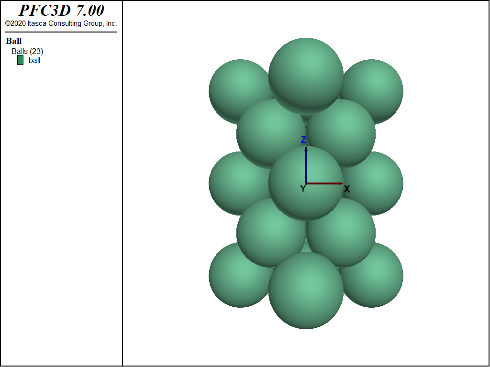
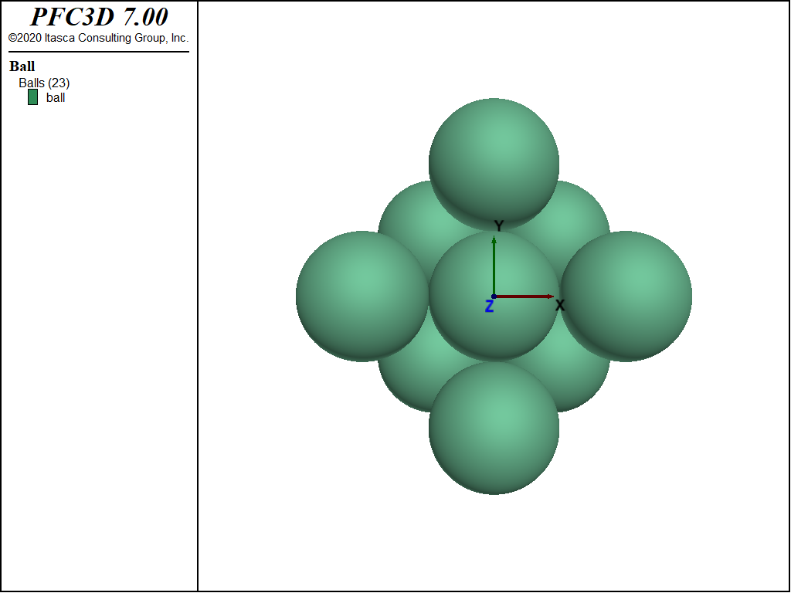

面心立方球体阵列的强度
问题描述
注意
本算例的项目文件可在 PFC 中查看或运行。[1]所用的数据文件（data files）列于本算例末尾。
本题在轴对称和平面应变条件下，用数值方法确定均匀球体面心立方阵列的强度。该阵列如后文 图 1（Fig. 1） 和 图 2（Fig. 2） 所示。球颗粒是刚性的，摩擦系数为 0.3（约相当于 17° 的摩擦角）。试验结果与 [Thornton1979] 的解析解进行了比较。


图 1：球体面心立方阵列的几何形状，俯视图。


图 2：球体面心立方阵列的几何形状，立面图。
闭式解
在均匀条件下，典型球体内破坏时的平均应力张量形式已由 [Thornton1979] 通过解析方法确定。该破坏机制的特征是沿两个相互垂直的平面形成间隙，它与如下形式的归一化应变增量张量相关联
其中 \(a + b =\) 1，参考轴的定义见 图 （Fig.）Fig. #planview。
用接触力表示平均应力张量的定义与 PFC3D 中所采用的相同。在可忽略剪切分量的情况下，应力张量在相差一个标量乘数因子的意义下可表示为如下形式
其中 \(f\) 为摩擦系数，常数 \(C\) 由以下关系式定义
在轴对称条件下，\(a = b = 0.5\)，而破坏时作为强度度量定义的主应力比值则为
在平面应变条件下，\(a =\) 1、\(b =\) 0，强度由以下比值度量：
PFC3D 模型
数值模型配置由 23 个半径相同的球颗粒组成，公共半径为 \(r\)，如上文 图 （Fig.）Fig. #planview 和 图 （Fig.）Fig. #elevation 所示。为便于指称，我们用 outer-\(x\)、outer-\(y\) 和 outer-\(z\) 分别表示原点位于 \(|x| = 2r\)、\(|y| = 2r\) 和 \(|z| = 2\sqrt{2r}\) 处的球颗粒。所有球颗粒具有相同的属性：
| density | 2000 | \([M/L^3]\) |
| 法向刚度 | 5 × 1011 | \([M/T^2]\) |
| 剪切刚度 | 5 × 1011 | \([M/T^2]\) |
| 摩擦系数 | 0.3 | |
| radius | 20 | \([L]\) |
试验的侧向边界条件按如下方式规定。在轴对称和平面应变两种条件下，均对最外层球颗粒沿 \(x\) 方向施加大小为 \(F\) 的压力。在轴对称试验中，对最外层球颗粒沿 \(y\) 方向施加相同大小 \(F\) 的压力；而在平面应变试验中，将 \(y\) 方向的速度固定为零。轴向条件则通过对最外层 outer-\(z\) 球颗粒沿 \(z\) 方向施加压缩速度来规定。
在数值试验中，首先将顶部和底部球颗粒的速度固定为零，将球颗粒摩擦系数设为较低的 \(1 × 10^5\)，在轴对称和平面应变两种试验中均使用 \(F =1 \times 10^6\) 施加侧向边界条件，然后循环计算系统至平衡。随后将球颗粒摩擦系数设为 0.3。对最外层 outer-\(z\) 球颗粒沿 \(z\) 方向施加大小为 \(|v_z|= 0.5 \times 10^4\) 的压缩速度，并通过绘制以 \(z\) 方向应变量度表示的主应力时程图来监测系统的破坏。整个试验过程中球颗粒的转动均被固定。破坏在 \(σ_{zz}\) 图上由应力-应变曲线的峰值来判定。取该时刻的应力比记录值作为对比用的数值结果。
结果与讨论
采用 \(f = 0.3\) 时，由式 (4) 和 (5) 得出的解析预测结果与数值试验结果的对比列于 表 2（Table 2） 和 表 3（Table 3）。二者吻合良好，轴对称试验和平面应变试验的相对误差均小于 1%。
| 数值 | 解析解 | 相对误差 | |
|---|---|---|---|
| \(\sigma_{zz} / \sigma_{xx}\) | 3.7142 | 3.7143 | < 1% |
| \(\sigma_{yy} / \sigma_{xx}\) | 1.0000 | 1.0000 | < 1% |
| 数值 | 解析解 | 相对误差 | |
|---|---|---|---|
| \(\sigma_{zz} / \sigma_{xx}\) | 4.8809 | 4.8812 | < 1% |
| \(\sigma_{yy} / \sigma_{xx}\) | 1.9603 | 1.9604 | < 1% |
参考文献
| [Thornton1979] | (1, 2) Thornton, C. “均匀刚性球颗粒面心立方阵列的破坏条件，” Géotechnique, 29 (4), 441-459 (1979). |
数据文件
Array_Strength.dat (3D)
; 文件名：array_strength.dat (3D)
;
; 刚性球面心立方阵列的强度
; 轴对称与平面应变工况
;=========================================================================
model new
model large-strain on
fish define c_para
; --- 输入 ---
global radb = 20
global conf_p = 1.e6
global pzvel = 0.0
global mzvel = 0.0
; --- 计算 ---
global dhz = math.sqrt(2) * radb
global small = radb * 0.01
global drang = radb * 0.5
global height = 4.0 * dhz
global zt1 = 2.0 * dhz - drang
global zt2 = 2.0 * dhz + drang
global zb1 = - zt2
global zb2 = - zt1
global yt1 = radb * 1.5
global yt2 = radb * 2.5
global yb1 = - yt2
global yb2 = - yt1
command
model domain extent [-5.0*radb] [5.0*radb] ...
[-5.0*radb] [5.0*radb] ...
[-5.0*radb] [5.0*radb] ...
condition d d d
endcommand
end
; --- 测量圆 ---
fish define c_mes
global radi = radb + small
command
measure create id 1 rad [radi]
end_command
global mp = measure.find(1)
end
fish define c_stres
global mstr = measure.stress(mp)
global c_s11 = mstr(1,1)
global c_s22 = mstr(2,2)
global c_s33 = mstr(3,3)
global c_s12 = mstr(1,2)
global c_s13 = mstr(1,3)
global c_s23 = mstr(2,3)
global c_s21 = mstr(2,1)
global c_s31 = mstr(3,1)
global c_s32 = mstr(3,2)
if c_s11 < c_s22 then
global c_s1 = c_s11
global c_s2 = c_s22
else
c_s1 = c_s22
c_s2 = c_s11
end_if
if c_s2 < c_s33 then
global c_s3 = c_s33
else
if c_s1 < c_s33 then
c_s3 = c_s2
c_s2 = c_s33
else
c_s3 = c_s2
c_s2 = c_s1
c_s1 = c_s33
end_if
end_if
global c_r1 = 0.0
if c_s3 # 0.0 then
c_r1 = c_s1 / c_s3
end_if
global c_r2 = 0.0
if c_s3 # 0.0 then
c_r2 = c_s2 / c_s3
end_if
end
fish define g_large
global dis = 2. * radb
global dism = - dis
global numid = numid + 1
command
ball create id [numid] position-x 0. position-y [dis] ...
position-z [zb] rad [radb]
end_command
numid = numid + 1
command
ball create id [numid] position-x [dism] position-y 0. ...
position-z [zb] rad [radb]
end_command
numid = numid + 1
command
ball create id [numid] position-x 0. position-y 0. ...
position-z [zb] rad [radb]
end_command
numid = numid + 1
command
ball create id [numid] position-x [dis] position-y 0. ...
position-z [zb] rad [radb]
end_command
numid = numid + 1
command
ball create id [numid] position-x 0. position-y [dism] ...
position-z [zb] rad [radb]
end_command
end
fish define g_small
global radbm = - radb
global numid = numid + 1
command
ball create id [numid] position-x [radbm] position-y [radb] ...
position-z [zb] rad [radb]
end_command
numid = numid + 1
command
ball create id [numid] position-x [radb] position-y [radb] ...
position-z [zb] rad [radb]
end_command
numid = numid + 1
command
ball create id [numid] position-x [radbm] position-y [radbm] ...
position-z [zb] rad [radb]
end_command
numid = numid + 1
command
ball create id [numid] position-x [radb] position-y [radbm] ...
position-z [zb] rad [radb]
end_command
end
fish define g_pack
global zb = - 2. * dhz
g_large
global z1 = zb - small
global z2 = zb + small
command
ball extra 1 0 range position-z [z1] [z2]
end_command
zb = -dhz
g_small
z1 = zb - small
z2 = zb + small
command
ball extra 1 1 range position-z [z1] [z2]
end_command
zb = 0.
g_large
z1 = zb - small
z2 = zb + small
command
ball extra 1 0 range position-z [z1] [z2]
end_command
zb = dhz
g_small
z1 = zb - small
z2 = zb + small
command
ball extra 1 1 range position-z [z1] [z2]
end_command
zb = 2. * dhz
g_large
z1 = zb - small
z2 = zb + small
command
ball extra 1 0 range position-z [z1] [z2]
end_command
end
fish define c_press
global d1 = 0.5 * radb
global d2 = 2.1 * radb
global c_v = - conf_p
command
ball attribute force-applied-x [c_v] range position-x [d1] [d2]
ball attribute force-applied-y [c_v] range position-y [d1] [d2]
end_command
d1 = -d1
d2 = -d2
c_v = conf_p
command
ball attribute force-applied-x [c_v] range position-x [d2] [d1]
ball attribute force-applied-y [c_v] range position-y [d2] [d1]
end_command
end
fish define strain_mes
global verdis = verdis + pzvel * global.timestep
global e1 = 2. * verdis / height
global c_t = global.timestep
end
fish define c_comp
c_press
command
ball property 'fric' 1.e-5
fish callback add c_stres -1.0
fish callback add strain_mes -1.0
model cycle 300
endcommand
end
fish define c_load
pzvel = 0.5e-4
mzvel = -0.5e-4
command
history interval 1
ball property 'fric' 0.3
ball attribute velocity-z [pzvel] range position-z [zb1] [zb2]
ball attribute velocity-z [mzvel] range position-z [zt1] [zt2]
model cycle 700
endcommand
end
; --- 选择接触模型
contact cmat default model Linear
; --- 生成几何常数 ---
[c_para]
; --- 创建球体集合 ---
[g_pack]
; --- 创建测量球 ---
[c_mes]
; --- 历史 ---
fish history c_t
fish history e1
fish history c_r1
fish history c_r2
fish history c_s33
fish history c_s22
fish history c_s11
fish history c_s12
fish history c_s13
fish history c_s23
; --- 参数设置 ---
ball attribute den 2000 damp 0.7
ball property 'kn' 5e11 'ks' 5e11
model clean
; --- 固定顶、底两层 ---
ball fix velocity-z range position-z [zb1] [zb2]
ball fix velocity-z range position-z [zt1] [zt2]
ball fix spin-x spin-y spin-z range position-z [zb1] [zt2]
model save 'ini'
;--------------------------------------------------------------------------
;-------------- 轴对称工况 -------------
;--------------------------------------------------------------------------
; --- 压实阶段 ---
[c_comp]
; --- 加载阶段 ---
[c_load]
; --- 检查结果 ---
[c_stres]
fish list [c_r1] [c_r2]
model save 'as'
;--------------------------------------------------------------------------
;-------------- 平面应变工况 -------------
;--------------------------------------------------------------------------
model restore 'ini'
; --- 固定前、后两层 ---
ball fix velocity-y range position-y [yb1] [yb2]
ball fix velocity-y range position-y [yt1] [yt2]
ball fix velocity-y range position-z [dhz-small] [dhz+small]
ball fix velocity-y range position-z [-1.0*dhz-small] [-1.0*dhz+small]
; --- 压实阶段 ---
[c_comp]
; --- 加载阶段 ---
[c_load]
; --- 检查结果 ---
[c_stres]
fish list [c_r1] [c_r2]
model save 'ps'
program return
;==========================================================================
;文件结束：array_strength.dat (3D)
尾注
| [1] | 要在 PFC 中查看本项目，请使用程序菜单。
⮡ PFC |
| 这些内容对您有帮助吗？… | FLAC3D © 2019, Itasca | 原文更新于 2020 年 10 月 8 日 |